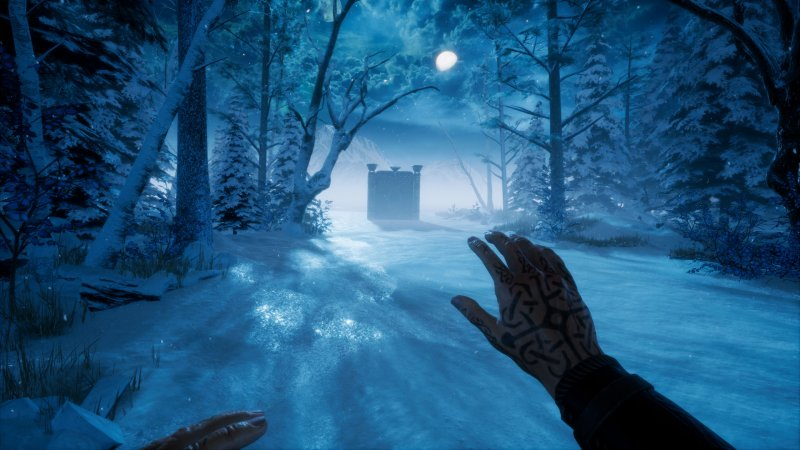
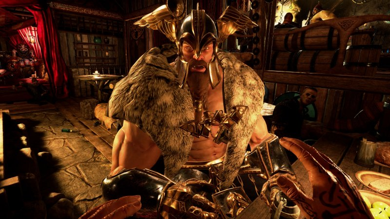
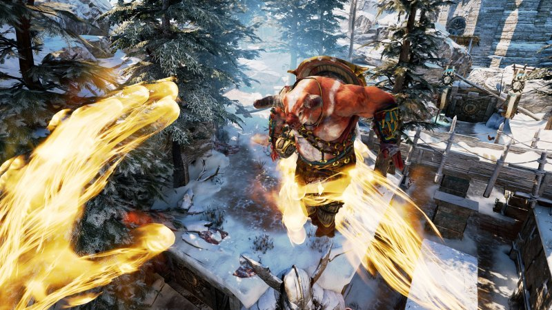

Asgard's Wrath, la recensione - PC
La recensione di Asgard's Wrath. Loki dice che c'è una nuova divinità in giro, sei per caso tu? Indossa un Oculus e scopri la verità! La nostra recensione di Asgard's Wrath.
RECENSIONE di Edoardo Tinto - 7/12/2019
E alla fine ce l'hanno fatta: Oculus ha finalmente agguantato la qualità software che fino ad oggi era prerogativa del visore meno evoluto, quello Sony. Il primo tentativo di sorpasso lo abbiamo visto pochi mesi fa con Defector, un pari livello di Blood & Truth , ma con Asgard's Wrath, di cui leggete la recensione, il balzo in avanti è oramai netto. Oculus si è finalmente trasformata in una piattaforma matura, dapprima rinnovando con intelligenza l'offerta hardware , e ora concretizzando la sua capacità di investire in software di qualità. Con Half-Life: Alyx si sta svegliando da un lungo torpore persino Valve. Ce ne hanno messo eh, ma finalmente lo hanno capito tutti: per quanto affascinanti, estrosi, rivoluzionari, solamente con le piccole produzioni non si va avanti, e che adesso servono i giochi, ma quelli con i soldi dietro. E Asgard's Wrath lo è, tanto che probabilmente insieme ad Astro Bot per PSVR è forse il miglior gioco per la realtà virtuale oggi esistente. Non solo perché è un gioco bello da giocare, divertente, epico, longevo, ma perché è pulito, chiaro, ricco, come un gioco Tripla A. Qui non c'è spazio per quelle interfacce poco leggibili, per quelle animazioni un po' rudimentali, per quell'aspetto un po' cheap che in molti casi va benissimo, ma che a quanto pare non basta a tenere in piedi un'intera tecnologia.
Semplicemente... divino
In Asgard's Wrath, il giocatore è una nuova divinità, Il Dio degli Animali stando a quanto ci dirà Loki in una calda locanda piena di strambi figuri nella quale torneremo più volte lungo l'avventura. E come divinità, abbiamo i nostri poteri e i nostri doveri, tra cui aiutare le persone che ne avranno più bisogno. Un pretesto che ci darà modo di entrare nel corpo di diversi personaggi e viverne le sontuose avventure, per un totale di venti densissime ore di gioco che possono facilmente raddoppiare se vi impelagherete nel contorno fatto di sfide e collezionabili. Ci troviamo davanti a un tipico gioco di ruolo action, con un sistema di progressione semplice eppure sorprendentemente efficace. I livelli sono composti linearmente ma si dipanano lungo diverse aree più ampie, pensate per rallentare l'azione attraverso fasi più ragionate, efficaci diversivi di gameplay. Qui, solitamente, potremo uscire dal corpo del personaggio per tornare ad essere immense divinità, in grado di spostare gli oggetti dello scenario come ponti, bracieri eccetera come fossero costruzioni giocattolo. Quando saremo nella nostra forma originale, pur mantenendo il suo aspetto grafico, il mondo di gioco sembrerà essersi trasformato in un meraviglioso modello in scala, ma ricco di vita, in movimento. Sottolineiamo l'effetto perché oramai alla prima persona virtuale ci si è in qualche modo abituati, mentre si tende a sottovalutare l'impatto di certe altre visuali che invece è altrettanto sorprendente.
Prima persona virtuale
In prima persona si tirano leve, si dialoga con i diversi personaggi, si ispeziona, e naturalmente si combatte. E il combattimento di Asgard's Wrath è di prima categoria, riuscendo anche a trasmettere un discreto feedback quando le armi bianche inevitabilmente si scontreranno nel mondo di gioco e non nella realtà. La parata, effettuabile sia con la stessa arma che con i diversi scudi, diventa così un elemento essenziale per mettere l'avversario nei guai. Attraverso i comandi è anche possibile fare degli scatti direzionali per toglierci velocemente dai guai. Diversi personaggi potranno anche sfruttare la potenza di una quantità sorprendente di armi da lancio, tra cui archi, balestre, spara dardi da polso e molto altro ancora, inoltre ogni arma ha i suoi proiettili speciali.
E poi non dimentichiamoci la cosa più importante: siamo o no il Dio degli Animali? Entrando nella nostra forma originaria, potremo anche trasformare alcune bestie in compagni umanoidi dalle diverse caratteristiche e abilità, pronti ad aiutarci nel combattimento e nella soluzione di alcuni puzzle ambientali. In Asgard's Wrath c'è anche spazio per un più che discreto sistema di crafting. Tecnicamente questa nuova avventura in esclusiva per Oculus si presenta dettagliata, colorata, e con un ottimo character design. Gli artisti di questa software house americana chiamata Sanzaru hanno fatto davvero un ottimo lavoro nel ricreare ambienti e soprattutto atmosfere. Al punto che spesso ci è tornata voglia di tornare nei mondi di Asgard's Wrath anche dopo aver portato a termine ogni missione, solo per continuare ad esplorare immersi in questa meraviglia virtuale. Se infatti la sceneggiatura si regge bene in piedi senza mai proporre sfumature più complesse, le straordinarie scenografie svolgono un lavoro fondamentale per permettere il completo abbandono dell'utente.
- Top 3 - gli articoli più letti
-
 Call of Duty: Modern Warfare,
la recensione
Call of Duty: Modern Warfare,
la recensione
-
 Star Wars Jedi: Fallen Order,
la recensione
Star Wars Jedi: Fallen Order,
la recensione
-
 Xiaomi entra
nel mondo dei monitor con Mi Surface Display, un 34 pollici WQHD con FreeSync,
la recensione
Xiaomi entra
nel mondo dei monitor con Mi Surface Display, un 34 pollici WQHD con FreeSync,
la recensione
- La recensione del mese
-
 MSI RX 5700 XT Gaming X, la recensione
MSI RX 5700 XT Gaming X, la recensione
- I giochi più attesi
VALUTAZIONE
8.9
PRO
- Grafica di grande impatto
- Combat system solido e divertente
- Ottimo gameplay
- Longevità di tutto rispetto
CONTRO
- Sezioni "builders" poco usate
- Trama leggerina
COMMENTO FINALE
Una delle esperienze più intense oggi disponibili su realtà virtuale. La sua trama spezzata in quattro avventure da circa cinque ore, e gli innumerevoli segreti tutti da scoprire, lo rendono poi perfetto sia per sessioni brevi che per serate dedicate. In alcuni aspetti, ci ha ricordato due gemme come i Dark Messiah di Arkane. Se avete un Oculus, Asgard Wrath è imprescindibile.